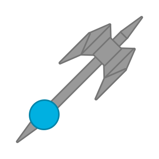

The Battleaxe is a heavier version of the Axeman.
It has a team-colored circular body with a extremely long but thin gray handle with a spear tip on its end and a massive gray double-headed axe head.
It can mine wood by touching it with the axe head. It does this via an explosion with radius equivalent to 3x the tank body and center on the pickaxe head.
The Axe can deal melee damage to enemy tanks, being 2.5x as damaging as Lancer, with the added r-click bonus of disabling physical shields for 10 seconds. However the tank itself has a maximum turn speed of 60°/s.
Tinker's Construct for the original weapon type.

Tier 5 Tank
Upgrades from Axeman
Weapons:
Inherits base body stats from Basic
A heavier Axeman. Deals massive damage to wood and tanks alike.